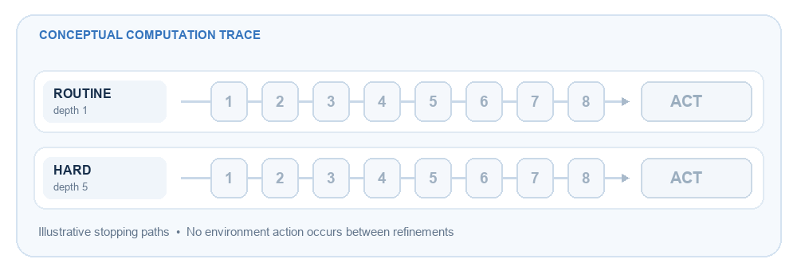
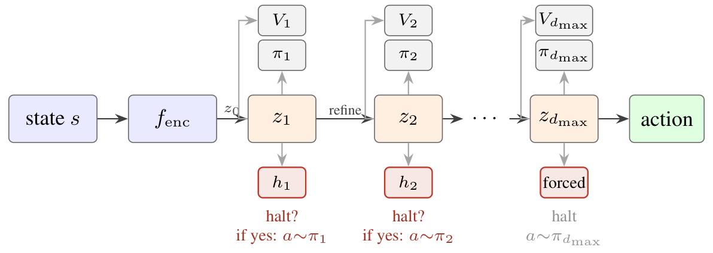
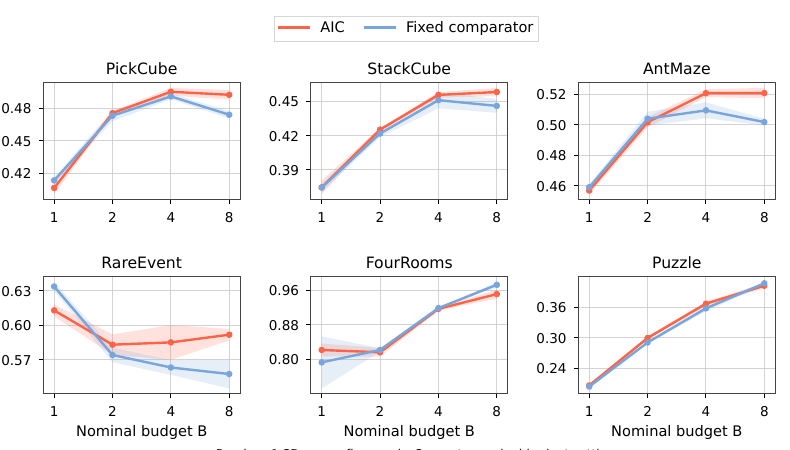

Refine
Reuse one residual block to improve the representation without adding a new block of parameters at every depth.
Accepted at NeurIPS 2026 · Reinforcement learning
Adaptive Internal Computation for Reinforcement Learning
Virginia Tech

Conceptual illustration; the pictured depths are not measured policy outputs.
01 / Motivation
Iterative policies can refine a state representation before acting. A fixed-depth policy spends the same number of refinements on every state, even when some decisions are routine and others need more thought.
Adaptive Internal Computation (AIC) learns a stopping decision alongside the action. It can stop early or continue refining within a capped budget, then executes one action in the environment. The paper asks when this state-dependent allocation helps, and separates its effect from other changes in training.
02 / Method
An encoder produces a latent state. A shared residual block refines it repeatedly. At each depth, action and value heads read the representation, while a halting head decides whether to continue. Stopping at the maximum depth is forced.

Reuse one residual block to improve the representation without adding a new block of parameters at every depth.
Sample a stopping depth and an action as a joint policy, so PPO can assign credit to both choices.
Penalize expected depth and supervise value predictions at every depth with a shared rollout target.
Intermediate value differences are diagnostics, not labels for the best stopping depth or counterfactual gains.
03 / Experimental results
The twelve-task benchmark spans control, manipulation, navigation, language, gridworld, and rare events. At the reported eight-step nominal cap, AIC has higher mean reward than the listed fixed comparator on nine tasks, ties on one, and is lower on two. These are operating-point comparisons; realized computation is not matched by the cap alone.
Choose DoorKey, Memory, or StackCube. The 20-second videos illustrate the environments, not policy rollouts. The graph shows fixed-policy and AIC reward means reported in the paper.
Find a key, unlock a door, and reach the goal. About this environment ↗ · License
DoorKey: AIC has higher mean reward (+0.0211) and uses 3.36 refinements on average versus 8 for Fixed-8.

AIC minus the listed fixed comparator at nominal B = 8.
AIC minus the listed fixed comparator at nominal B = 8.
A default-setting loss at nominal B = 8.
04 / Mechanism
A higher return can come from adaptive allocation, intermediate supervision, extra capacity, uniformly useful refinement, or different training data. The paper tests these explanations with targeted early exits, a yoked data study, and an allocation-by-supervision factorial.
Forcing high-depth states to stop at depth one often hurts more than truncating a count-matched random set. This indicates sensitivity to chosen refinements, though the amount of compute removed is not matched.
PickCube and AntMaze show allocation-dominant gains. StackCube has mixed effects. RareEvent is supervision-dominant.
| Task | Neither | Supervision only | Allocation only | Full AIC |
|---|---|---|---|---|
| PickCube | .421 | .434 | .472 | .488 |
| AntMaze | .451 | .458 | .505 | .518 |
| StackCube | .394 | .413 | .441 | .455 |
| RareEvent | .558 | .589 | .560 | .591 |
These factorial means have no seed-level intervals and should be interpreted within this study, not substituted into the main benchmark.
05 / Theory
Under explicit assumptions, the paper shows an allocation advantage at equal expected depth. If easy states are already solved at depth one and a small fraction of hard states need depth K, an ideal state-dependent allocator can reserve depth K for hard states. Any state-independent stopping schedule at the same expected budget retains a positive expected shortfall.
Spend one step on easy states. Save the deeper computation for hard states.
This establishes an opportunity for allocation under the theorem’s value-profile assumptions. It does not guarantee that AIC learns the ideal stopping rule.
06 / Limitations and open questions